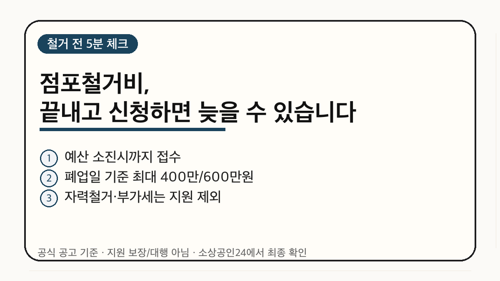
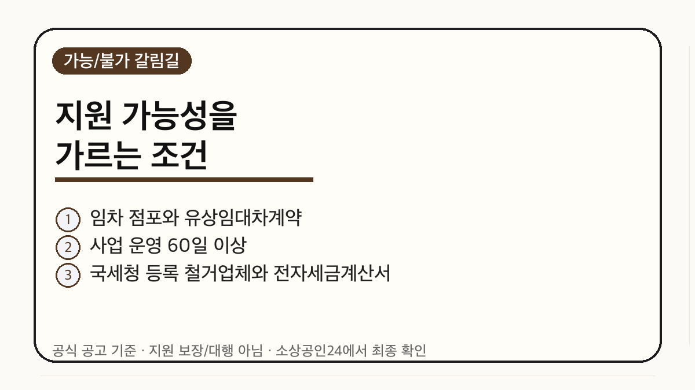
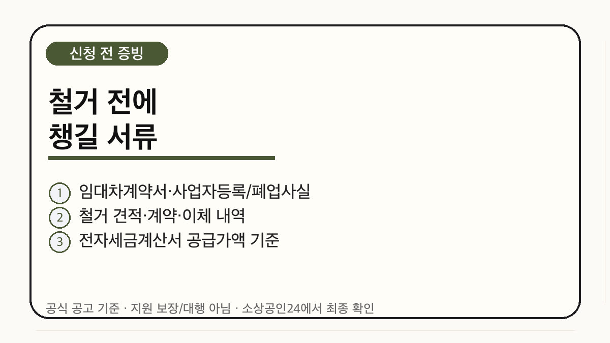

폐업을 앞두고 점포를 철거해야 한다면, 먼저 ‘철거 전’ 조건부터 확인하는 편이 안전합니다. 2026년 희망리턴패키지 원스톱폐업지원의 점포철거비는 예산 소진시까지 접수되며, 폐업일 기준에 따라 최대 400만원 또는 600만원 한도가 적용됩니다.
핵심은 “철거비가 있다”가 아니라 “지원되는 방식으로 철거했는가”입니다. 자력철거, 전자세금계산서가 없는 지출, 부가세 부분, 지원제외 업종 같은 조건에서 헷갈리면 나중에 비용을 돌려받기 어렵습니다.


공식 공고 기준 점포철거비는 전용면적 3.3㎡당 20만원 이내에서 산정됩니다. 한도는 폐업일 기준에 따라 다릅니다. 공고에는 폐업일별 최대 400만원 또는 600만원 기준이 함께 안내되어 있으므로, 본인 폐업일과 신청 유형을 공식 문서에서 다시 대조해야 합니다.
여기서 중요한 점은 “최대한도”가 곧 자동 지급액은 아니라는 점입니다. 실제 지급은 요건 확인, 현장 확인, 철거와 증빙 검토를 거쳐 판단됩니다. 블로그 글만 보고 신청 가능 여부를 확정하지 말고, 소상공인24의 신청 화면과 공고문을 같이 확인해야 합니다.
폐업할 때는 마음이 급합니다. 임대인과 원상복구 날짜를 맞춰야 하고, 집기 처분도 해야 하고, 세무 신고도 남아 있습니다. 그런데 점포철거비는 사후에 영수증만 모아 붙인다고 끝나는 지원금이 아닙니다.
특히 전자세금계산서, 이체 내역, 철거 계약, 업체 정보가 엇갈리면 나중에 설명하기 어렵습니다. 그래서 철거업체에 전화하기 전에 “지원사업 기준에 맞게 증빙을 남길 수 있는지”부터 물어보는 게 좋습니다.

첫째, 지원 보장이 아닙니다. 예산 소진시까지 접수라고 되어 있어도, 개별 요건과 증빙 검토를 통과해야 합니다.
둘째, 부가세까지 전부 보전되는 구조가 아닙니다. 공고는 전자세금계산서의 공급가액 기준을 안내합니다.
셋째, 직접 철거하면 위험합니다. 비용을 아끼려고 직접 철거했다가 지원 구조와 맞지 않을 수 있습니다.
넷째, 폐업일 기준 한도가 다를 수 있습니다. 최대 400만원과 600만원 기준은 공고문에서 본인 폐업일과 함께 다시 확인해야 합니다.
정리하면, 점포철거비는 폐업 후 비용을 줄일 수 있는 중요한 지원이지만 “철거 전 증빙 설계”가 먼저입니다. 오늘 할 일은 신청서를 바로 쓰는 것이 아니라, 내 점포가 임차 점포인지, 철거업체와 세금계산서가 공고 기준에 맞는지, 폐업일별 한도가 어디에 해당하는지 확인하는 것입니다.
이 글은 2026년 6월 6일 확인한 공식 공고와 첨부자료 기준의 무료 검증 글입니다. 신청 대행, 수급 보장, 법률·세무 자문이 아닙니다. 접수 전 최신 공고와 소상공인24 안내를 확인하세요.